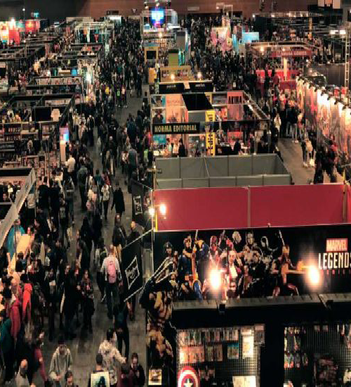

Cosplay
Es un fenómeno cultural relativamente reciente, convir-
tiéndose en uno de los principales atractivos en las convenciones
de anime, comics y videojuegos. Es toda una subcultura que ha
cosechado miles de fanáticos alrededor del mundo que incluye una
aguda interpretación de los personajes, conocimientos de diseño y
una gran cantidad de tiempo y dinero invertido para lograr la
mayor similitud posible con el protagonista interpretado, trans-
formándose así en todo un arte. Es así, que en la actualidad
vemos que el cosplay aparece en prácticamente todos los grandes
eventos vinculados a la industria del cómic, el anime y los
videojuegos.

Cómics
Es una forma de expresión artística y un medio de
comunicación que consisten en una serie de dibujos, dotados o no
de texto de acompañamiento, que leídos en secuencia componen un
relato o una serie de ellos. Suelen ir enmarcadas en viñetas, que
son recuadros adaptados en forma y estilo al contenido narrativo
o humorístico de la historia. Ha habido grandes y reconocidos
cultores de este género, tanto en Europa como en las Américas,
entre los cuales destacan los estadounidenses Will Eisner y Art
Spiegelman, los argentinos Oesterheld, Franquin, Trillo, Breccia
y Altuna, o ilustradores contemporáneos como el escandinavo
Jason, el italiano Milo Namara o Guido Crepax, entre muchos
otros.
Tiendas
Hace 20 años el mundo del cómic vivía un cambio monumental:
los tebeos estaban en retirada del kiosco y se refugiaban en las
tiendas especializadas de cómic. El tebeo semanal en grapa se
veía poco a poco acompañado de tomos de edición cuidada,
recopilatorios, novelas gráficas... El cómic en general ha
crecido bastante en todo el mundo, en particular en España. Entre
el 94 y el 97 no se editaba tanto como se editaba hoy mismo.
Puedes encontrar todas las novedades de Estados Unidos, muchísimo
manga, independientes, cómic franceses. Hay más de todo: más
editoriales, más autores, más industria.
Personas invitadas
Los invitados actores Jack Dylan Grazer (uno de los niños
de It), el actor de Juego de Tronos Tom Hopper ( The Umbrella
Academy y Terminator: Destino Oscuro) o Anya Chalotra y Freya
Allen, actrices de The Witcher, el próximo gran estreno de
Netflix. Otros intérpretes que acudirán a la cita son Ivana
Baquero, Goya a la Mejor Actriz Revelación de 2007 por El
laberinto del fauno y a la que se puede ver actualmente en la
serie de misterio Alta Mar y Ross Marquand, un actor que ha
pasado por Mad Men, The Walking Dead y las películas de Los
Vengadores, además de haber puesto voz a personajes de
videojuegos y series tan conocidas como Padre de familia y Robot
Chicken.